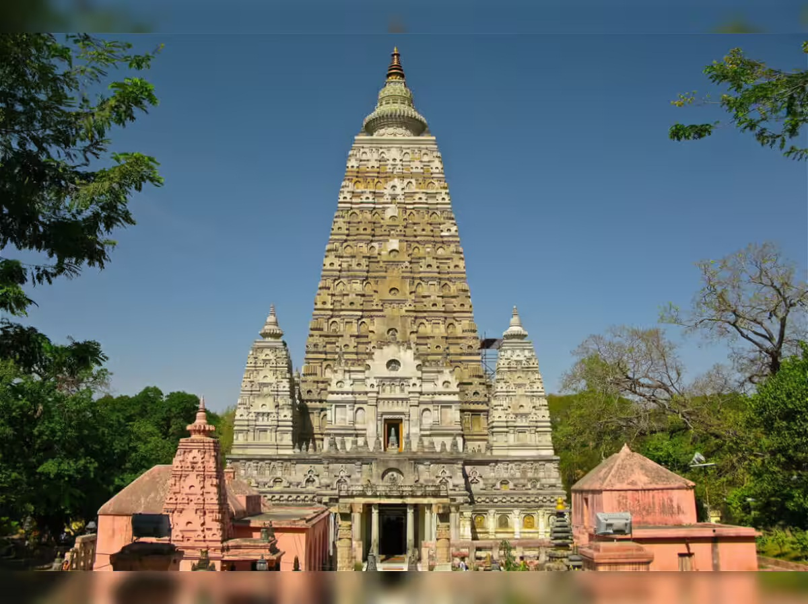
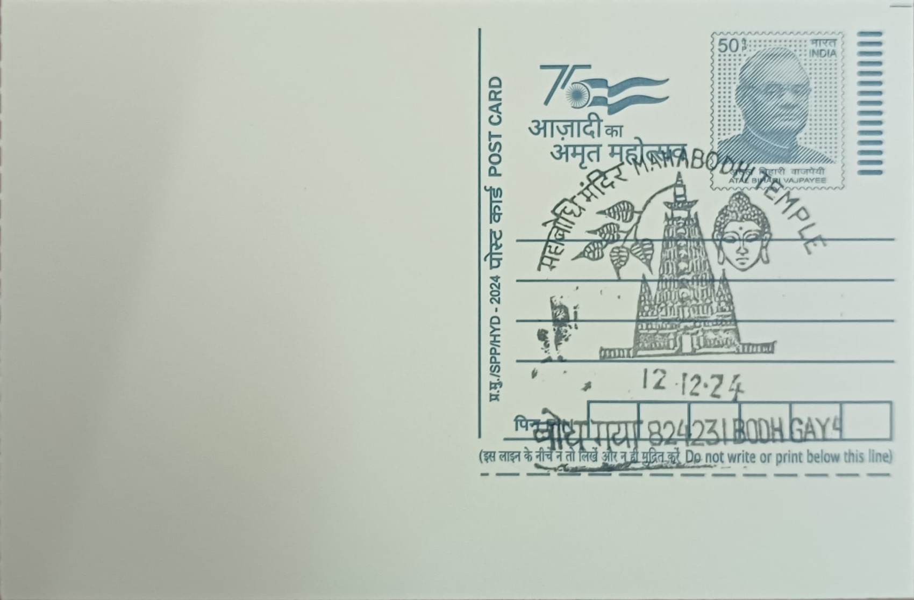

The Mahabodhi Temple at Bodh Gaya marks the precise spot where Siddhartha Gautama, seated beneath a pipal tree on the bank of the Phalgu river, attained enlightenment around the 6th-5th century BCE and became the Buddha. The site takes its name directly from this event, "Mahabodhi" meaning "Great Awakening," and the location was fixed in Buddhist memory almost from the start: within roughly two centuries, Emperor Ashoka is recorded as having visited the spot and erected the first shrine and a diamond throne, the Vajrasana, to commemorate it. This makes the temple's founding legend unusually literal among the world's pilgrimage sites, since the place itself, rather than a relic or a later construction, is the object of veneration.
As one of the four principal sites associated with the life of the Buddha, alongside Lumbini, Sarnath and Kushinagar, Bodh Gaya is widely regarded as the most important of the four because of its direct link to the moment of enlightenment itself. The temple complex was inscribed as a UNESCO World Heritage Site in 2002, cited as one of the earliest Buddhist brick temples still standing in India and a structure that has profoundly influenced temple architecture across Buddhist Asia over the centuries. It continues to function simultaneously as an archaeological monument and a living site of worship, a combination UNESCO's own documentation notes as central to its significance, since it has never ceased to operate as a place of active pilgrimage and monastic practice since antiquity.
The present brick superstructure, rising to roughly 50 metres, dates largely to the Gupta period of the 5th-6th century CE, built on the foundations of the earlier Ashokan-era shrine and successive structures raised over the intervening centuries. Its stepped, pyramidal tower culminates in a small stupa-like finial, with four smaller corner towers echoing the same form, a design later copied in Buddhist temples from Myanmar to Thailand to Indonesia. By the 19th century the temple had fallen into serious disrepair, and its restoration was carried out in stages, first supported by the Burmese Buddhist mission and then undertaken more systematically from the 1880s by the British archaeologist Alexander Cunningham, whose excavation and reconstruction work gave the temple much of its present form.
Immediately beside the temple's western wall grows a descendant of the original Bodhi Tree, though not an unbroken continuation of it: the tree now on the site was planted in 1881 using a cutting taken from the Jaya Sri Maha Bodhi at Anuradhapura in Sri Lanka, itself grown from a branch of the original tree that Ashoka's daughter Sanghamitta had carried there in the 3rd century BCE. The Vajrasana, the stone slab Ashoka placed to mark the exact seat of enlightenment, still stands between the tree and the temple's eastern face, making the tree-and-throne grouping, rather than the temple building alone, the ritual focus for many pilgrims who circumambulate the site.
Administration of the temple today rests with the Bodh Gaya Temple Management Committee, constituted under the Bodh Gaya Temple Act of 1949 and chaired ex officio by the District Magistrate of Gaya, with Buddhist and Hindu members sitting jointly on the nine-member body, an arrangement that has itself been the subject of recent legal challenges from Buddhist groups seeking fuller control. Surrounding the main temple, monastic communities from Thailand, Japan, Bhutan, Tibet, Myanmar and elsewhere have built their own temples and monasteries in their national styles, turning the area around Bodh Gaya into a working cross-section of Buddhist Asia rather than a single monument in isolation. The complex thus functions simultaneously as an actively administered pilgrimage site, a protected archaeological monument, and a gathering point for Buddhist communities from across the continent who maintain a visible presence there year-round.
| Date of Introduction | October 8, 2024 |
|---|---|
| Address | Sub Postmaster, |
| Bodhgaya SO, | |
| Gaya (dt.), Bihar - 824231. |